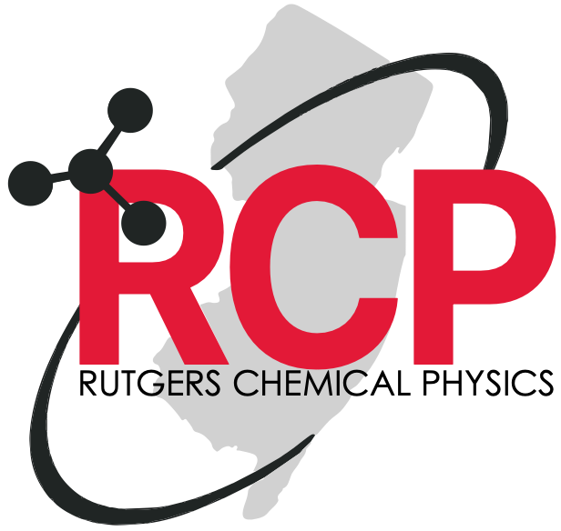

Broad and interdisciplinary
RCP is intentionally inclusive, spanning chemistry, physics, chemical and biochemical engineering, materials science, earth sciences, and related areas.
Building a shared chemical physics community across Rutgers.
RCP is a Rutgers-wide interdisciplinary network.
RCP brings together research groups across Rutgers–New Brunswick, Rutgers–Newark, and Rutgers–Camden whose work spans the broad field of chemical physics, including chemistry, physics, engineering, earth sciences, and materials science.

RCP is intentionally inclusive, spanning chemistry, physics, chemical and biochemical engineering, materials science, earth sciences, and related areas.
The initiative strengthens ties among Rutgers researchers in New Brunswick, Newark, and Camden, helping faculty and trainees discover common scientific interests.
Through symposium programming, discussions, and future community efforts, RCP supports new interactions, shared training, and cross-campus visibility.
The next Rutgers Chemical Physics Symposium is planned for June 5, 2026 at Rutgers–New Brunswick and will be hosted by Chemistry.
Check back for registration details, program updates, and speaker information.
Rick Remsing
Michele Pavanello
Grace Brannigan